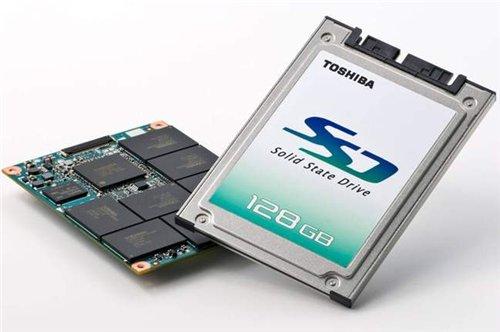

Твердотельный SSD накопитель, преимущества и недостатки.

Все привыкли, что для хранения информации в системном блоке мы используем винчестер. Но ничего не стоит на месте, и сейчас есть такие хранители информации, твердотельные накопители. Давайте разберемся, чем они отличаются, какие у них преимущества и что же лучше?
Ну, для начала разберемся, что собой представляет SSD накопитель. Данный накопитель основан на микросхемах памяти. Твердотельные накопители могу основываться на флеш-памяти, а так же памяти, подобной оперативной. К тому же он содержит управляющий контролер.
У твердотельного накопителя нет движущихся частей, что нельзя сказать о жестком диске.
Такие накопители используют в компактных устройствах, таких как: ноутбук, смартфон, нетбук и т.д. Это объясняется тем, что у SSD меньшие размеры и вес, в отличие от винчестера.
Конечно у твердотельного накопителя по сравнению с винчестером, есть свои преимущества и недостатки. Давайте сначала рассмотрим положительные стороны SSD. Как я уже говорил, у твердотельных накопителей нет движущихся частей, а чем их меньше,
тем меньше вероятность поломки. А еще благодаря этому, системный блок работают беззвучно.
SSD более устойчивый к механическим повреждениям, практически не чувствителен к электромагнитным полям и у него более широкий диапазон рабочих температур. Такого вида накопители требуют меньше энергии, именно поэтому портативные компьютеры с
ними работают на много дольше, от батареи. Также малые размеры и вес делают его еще более удобным и дают возможность использовать их в тех же портативных аппаратах.
Скорость работы твердотельного накопителя в разы превосходит скорость работы винчестера, время считывания файлов, не зависимо от его расположения, остается наименьшим.
Но у SSD есть и свои минусы — поэтому он не затмил обычный винчестер, а используется, так же как и он. Один из главных минусов твердотельного накопителя — это ограниченное кол-во циклов перезаписи.
Второй, не маловажный минус – это несовместимость со многими версиями windows. Проблема в том, что OC Windows работают с SSD, так же как и с обычными винчестерами.
Именно поэтому, если на вашем ноутбуке или нетбуке стоит SSD, то вам нужно, либо отключить файловые операции, которые рассчитаны на жесткие диски, либо установить OC Windows 7: она оптимизирована специально для твердотельных накопителей.
Еще один не малый минус, это высокая цена на твердотельный накопитель. Цена за 1гб SSD на много превышает цену за один гигабайт HHD. А так же цена за SSD растет прямо пропорционально объему, а цена обычного винчестера растет медленнее,
так как она зависит не от объема, а от количества пластин. Можно сравнить цены, если вам надо
купить системный блок в Минске.
Что-то среднее между твердотельными и традиционными винчестерами — это так сказать гибридные диски (HHD или H-HDD). Такой накопитель состоит из жестких магнитных дисков (HDD) и твердотельного накопителя малого объема.
SSD выполняет так называемую роль кэша, это позволяет увеличить производительность и срок службы устройства, а еще снижает потребность в энергии. Их также используют в портативных устройствах, таких как ноутбук и нетбук.
SSD еще не может полностью заменить привычный для нас HHD, но для применения его в ноутбуках он практически не заменим и очень удобен. Но на сколько мы знаем, прогресс не стоит на месте, и кто знает, может вскоре нас ожидают новые типы накопителей,
более совершенные — нужно лишь чуть-чуть подождать комьютерной модернизации. Нужно купить компьютер в Барановичах - на
baranovichi.cooler.by низкие цены, большой выбор, доставка домой.
Читайте также:
Как выбрать жёсткий диск?
Покупка портативного или внешнего жесткого диска.
Следующая статья:
СНПЧ - простое переоборудование принтера.